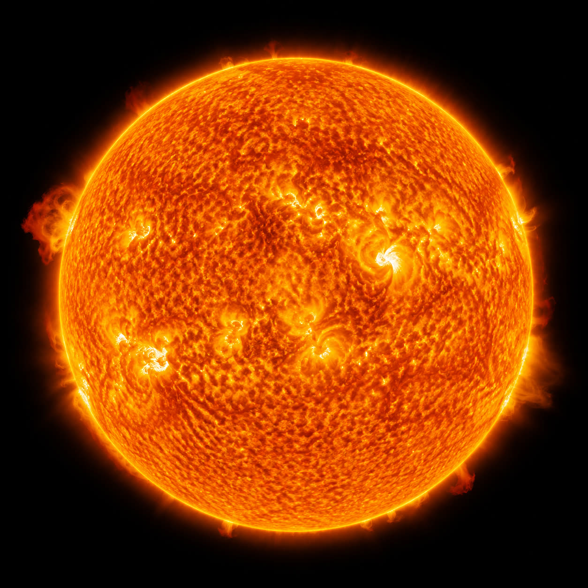

🧩 بازل الشمس «سِرَاجًا وَهَّاجًا» — علّمني ربي · اللقاء الثاني
🖨️ طباعة
للمعلمة:
تُطبع الصفحة على ورقٍ مقوّى، ثم تُقصّ على
خطوط القصّ الفاتحة المتقطّعة
فتصير أربعَ قطعِ بازل يركّبها الطفل ليكتمل قرصُ الشمس. المعنى: الشمسُ آيةٌ من آيات الله، جعلها ﴿سِرَاجًا وَهَّاجًا﴾ يضيء ويدفئ. الصورةُ واقعيّةٌ للشمس (مخلوقٌ سماويّ)، والآيةُ في الترويسة بخطٍّ دقيق.
بازل الشمس
﴿وَجَعَلْنَا سِرَاجًا وَهَّاجًا﴾
النبأ ١٣
الشمسُ آيةٌ من آيات الله — سِرَاجٌ وهّاجٌ يضيء ويدفئ في النهار

✂ تُقصّ على الخطوط المتقطّعة — أربع قطع · يركّبها الطفل لتكتمل الشمس، ثم يقول: «سبحان مَن جعل الشمسَ سِرَاجًا وَهَّاجًا».